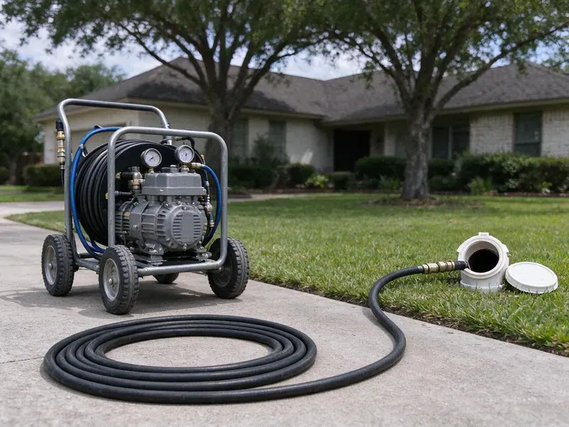

Hydro Jetting in Portales, NM
Same drain clogging every few months in Portales, NM? Hydro jetting scours the full pipe so the clog stops coming back.
- Same-Day Jetting Available
- Fewer Repeat Clogs
- Up to 4,000 PSI
- Residential and Commercial Units

Need Deep Drain Cleaning in Portales, NM?
Grease line clogging every few months? Call (505) 581-4975 and we will scour it back to full size.
High-Pressure Hydro Jetting in Portales, NM That Cleans the Whole Pipe
GVK Plumbing uses hydro jetting to clean drain and sewer pipes at pressures in the 3,000 to 4,000 PSI range for residential work. The nozzle does a lot of the work. Purpose-built nozzles pull the hose along while the spray scours the walls and breaks up whatever is ahead.
Our expertise includes:
- Pre and post jetting video inspection with recordings
- Grease, scale and root clearing
- Full-flow cleaning for home and commercial pipe

Additional Drain Services Services in Portales, NM
From stubborn kitchen clogs to main sewer backups, our drain services in Portales, NM restore full flow fast and keep it that way.


Customers
Why Choose GVK Plumbing for Hydro Jetting in Portales, NM?
We match the machine and nozzle to your pipe. Getting it right takes a camera. Correct settings clean the line fully and still protect the older pipe you find under many homes.
- Near-New Pipe, A jetted line comes out near its original diameter.
- Inspection First, We camera the line before jetting so pressure settings fit the pipe condition.
- Maintenance Plans, Scheduled jetting keeps buildup from getting to the point of a backup.
Citywide Coverage
Anywhere in Portales, NM, you can book jetting with us. Same rates everywhere. You pay the same whether you live downtown or out on the edge of the service area, and you get the same equipment and camera check.
Experienced Team
Licensed plumbers run our jetting jobs. Inspection comes before jetting. Our techs check the pipe on camera before choosing pressure, since local homes have everything from clay to PVC.
Safety-First Approach
Our jetters are inspected regularly. Worn parts get replaced. We take every precaution, including a camera inspection before jetting and regular checks of hoses, nozzles and fittings, to prevent damage to your plumbing.
Trusted Certified Portales Plumbing Services Professionals
At GVK Plumbing, we are proud to offer certified plumbing services throughout Portales, NM. Credentials matter in this trade. Our plumbers hold recognized industry credentials, and they follow strict safety and quality rules on every repair, installation and maintenance call we run.
Call Us Now PHCC Plumbing Contractor Recognition
PHCC Plumbing Contractor Recognition Better Business Bureau (BBB) Accreditation
Better Business Bureau (BBB) Accreditation Angi Certified Pro
Angi Certified Pro ISO 9001 Quality Management Certification
ISO 9001 Quality Management CertificationHigh-Pressure Jetting Jobs in Portales, NM
Hydro Jetting for Hard Water Scale in Portales
Water softeners and filtration systems are popular around Portales because they extend the life of fixtures and cut down on spotting. Scale traps debris. Rough pipe catches more waste. Jetting breaks down and flushes out hard mineral deposits, restoring the full diameter of the pipe, and it works much better than chemical descalers that can also damage older pipe.

Scale Removal in Cast Iron Pipes in Portales
Cast iron grows rust tubercles. Scale adds to them. Jetting with the right nozzle can strip much of this buildup and restore flow, while we keep the pressure in a safe range for aged iron and watch the camera for thin spots, which is also the standard prep before pipe lining.
Sewer Line Descaling with Hydro Jetting in Portales
Scale shrinks the pipe from the inside. More clogs come next. Water softeners and filtration systems are popular around Portales because they extend the life of fixtures and cut down on spotting. Jetting is the most effective way to descale a sewer, breaking down mineral deposits with focused water jets and flushing them away to restore the full carrying capacity of the line.
Restaurant and Hotel Jetting in Portales, NM
Restaurants and hotels build grease fast. Kitchens are not the only problem. Our heavy-duty commercial jetters clear grease and food waste from kitchen lines and restroom laterals while keeping downtime short, and regular service helps prevent interruptions during peak hours.
Residential Hydro Jetting in Portales
Household lines collect a mix of buildup. Grease, hair, soap and detergent. We use nozzles and pressure settings that fit everything from a 1-1/2 inch kitchen line to a 4 inch main, so the jet cleans the pipe without blowing back into a fixture.
Main Sewer Line Hydro Jetting in Portales
Every drain in the house empties into the main. One blockage, every fixture. Roots from nearby trees are the usual cause, and a jetter cuts them out and flushes the line clean to the street.
Sewer Line Hydro Jetting in Portales
Main sewers need bigger equipment. Our jetters handle larger pipe. Inspections on both ends of the job show you the line went from blocked to clean. Expansive clay soils in some areas swell and shrink with moisture, which can crack slab foundations and the pipes that run beneath them.

Root Cutting With Hydro Jetting in Portales
Specialty nozzles slice fine roots. Root hairs slip past a saw. Roots from yard trees and shrubs often enter at clay pipe joints or cracks, and jetting clears them out and gives a clean view of each entry point on camera afterward, which helps you weigh lining against a spot repair.
Hydro Jetting Service Near Me in Portales, NM
Being local means we know the housing stock. Clay and cast iron need a gentler setup. Familiarity with the area lets us set the jetter correctly for the pipe, and it means faster arrival when you need help.
Local jetting crews know local pipe. That shapes the job. Knowing the age of the area tells us what pipe to expect, and that tells us how hard to run the jetter.
GVK Plumbing at a Glance
- Fully licensed plumbing team covering Portales, NM
- Same-day appointments and 24/7 emergency response
- Upfront, flat-rate pricing before work begins
- 4.8-star rated by 320+ New Mexico customers
Portales Map
Portales Information
- Population
- 11,859
- Area codes
- Local
- Service area
- Portales and communities within 40 miles
- Nearby
- Clovis, Lovington, Roswell, Hobbs
Root intrusion in sewer lines and a buildup of scale and grease in older pipe make hydro jetting a regular fix for homes in Portales, NM.
Expert Services
Call GVK Plumbing for reliable plumbing work done by licensed pros in Portales, NM.
Our Specialized Plumbing Services in Portales, NM
At GVK Plumbing, you get every kind of plumbing service from one company across Portales, NM. We go from leak detection all the way to full system installations, for homes and commercial buildings, and we do it quickly at a fair price. Take a look at our core services below:


How a Hydro Jetting Visit Works in Portales, NM
From inspection to final video, here is how we jet a line properly.
Call to Schedule
Call (505) 581-4975 and describe the clogs you are seeing. We ask how often it happens and which drains are affected.
Camera Inspection
Your tech runs a camera to check the pipe and find the blockage. It tells us the right pressure and nozzle for the line.
Jet the Line
We feed the hose into the line and scour the walls in passes. Grease, roots and scale come out with the water.
Frequently Asked Questions About Hydro Jetting in Portales
Most jetting jobs in Portales, NM run $300 to $800. The pipe and access drive it. Main sewer descaling or heavy root removal sits at the high end, while a short kitchen line from an easy cleanout sits near the low end of that range, and you get a quote after the camera inspection.
Buildup responds best. Grease, scale and sludge. Soap scum, hair mats and fine roots that have worked into the sewer also come out under high pressure, since the jet scours the entire pipe surface instead of just one path.
Yes, we guarantee our jetting work in writing. Pipe condition sets the term.
Usually not. Jetting existing lines needs no permit. Should the job grow into a repair that alters the system, we tell you about any permit before starting.
Every 1 to 3 years for most homes. Restaurants need it more often. A home with past problems does well every year or two, and a commercial kitchen may need it every few months.
Almost all of them. It shines on buildup. Jetting breaks through roots, flushes heavy grease and food waste, strips mineral scale and removes compacted sludge that a cable usually leaves on the pipe walls.
Spartan Tool and MyTana jetters. Both are built for heavy use. They are known for reliable performance and solid safety features, and we pair them with nozzles sized for everything from kitchen branches to commercial mains.
Gorlitz, Spartan Tool and MyTana. These are field-tested brands. Each one is known for reliability and power on tough drain and sewer blockages, so customers get a thorough cleaning every time.
What Our Customers Say About Our Plumbing Experts

Karen W.
After our third pinhole leak in copper, we stopped patching. GVK Plumbing gave us a written plan room by room and repiped the house in PEX while we stayed in it. The crew covered our floors every morning and cleaned up every night.
Repiping · Roswell, NM
Tyler J.
We bought a taller comfort height toilet for my dad, who just had knee surgery. The plumber pulled the old one, found the flange was cracked, and replaced it before setting the new bowl. Took about two hours.
Toilet Installation · Lovington, NMNathan E.
Our tankless heater kept throwing an error code and shutting off mid shower. The tech flushed the heat exchanger, which was full of scale, and replaced a bad flow sensor. Hot water has been steady for half a year now.
Water Heater Repair · Roswell, NM
James P.
Our restaurant had a slow leak at the hand sink that was rotting the cabinet base. GVK Plumbing came in at six in the morning before prep, replaced the trap and both supply lines, and was packed up before my first cook clocked in.
Commercial Plumbing · Clovis, NM
Rachel N.
Hard water was leaving white crust on every faucet and our dishwasher was struggling. The tech tested the water, recommended a softener sized for a family of five, and installed it with a bypass valve in one afternoon. The spots on our glasses are gone.
Water Softener · Roswell, NM
Greg S.
I manage a small strip center with six tenants. GVK Plumbing handles our annual backflow testing and fixed a recurring clog in the shared sewer line that had been backing into the nail salon. Their reports come in clean and on time.
Commercial Plumbing · Roswell, NM